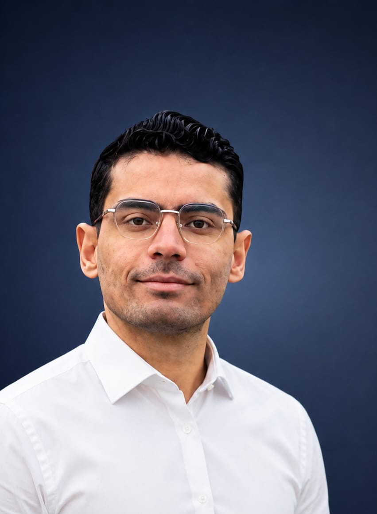

Assem Ryan
I design, manufacture and automate: SolidWorks CAD, SolidCAM/CNC machining, NI LabVIEW test benches and MATLAB/Simulink models. Three years of industry experience in maintenance and CNC manufacturing.Ich konstruiere, fertige und automatisiere: SolidWorks-CAD, SolidCAM/CNC-Fertigung, NI-LabVIEW-Prüfstände und MATLAB/Simulink-Modelle. Drei Jahre Industrieerfahrung in Instandhaltung und CNC-Fertigung.

Engineering projectsIngenieurprojekte
Click a project for details, figures and results.Für Details, Abbildungen und Ergebnisse auf ein Projekt klicken.
Experience & educationErfahrung & Ausbildung
Engineering roles and studies.Ingenieurtätigkeiten und Studium.
M.Sc. Mechanical Engineering – Product Development & SimulationM.Sc. Maschinenbau – Produktentwicklung & Simulation
- Master's project Nuevo 35: responsible for the NI LabVIEW software of the test benchMasterprojekt Nuevo 35: verantwortlich für die NI-LabVIEW-Software des Prüfstands
- Lab: commissioning and parameterisation of a PMSM with Hybrid-Kit and One EyeLabor: Inbetriebnahme und Parametrierung einer PMSM mit Hybrid-Kit und One Eye
Mechanical Engineer – Maintenance & ProductionMaschinenbauingenieur – Instandhaltung & Produktion
- Planned 12 maintenance tasks/month on 20 wire-drawing machines and nail presses (>90 % on time)Planung von 12 Wartungsmaßnahmen/Monat an 20 Drahtziehmaschinen und Nagelpressen (>90 % Termintreue)
- Reduced unplanned downtime by approx. 15 % through technical improvementsUngeplante Stillstände durch technische Verbesserungen um ca. 15 % reduziert
- 6 documented calibrations per month within defined tolerances6 dokumentierte Kalibrierungen pro Monat innerhalb definierter Toleranzen
Mechanical Engineer – CNC turning & millingMaschinenbauingenieur – CNC-Drehen & -Fräsen
- Cut machining time by approx. 20 % by optimising CAM programmes (SolidWorks CAM)Bearbeitungszeit durch Optimierung von CAM-Programmen (SolidWorks CAM) um ca. 20 % verkürzt
- Operated CNC lathes and milling machines; inspected finished partsBedienung von CNC-Dreh- und Fräsmaschinen; Prüfung der Fertigteile
Postgraduate studies, Production EngineeringPostgraduales Studium Produktionstechnik
Bachelor in Mechanical Engineering (Production & Mechanical Design)Bachelor Maschinenbau (Produktion und mechanisches Design)
SkillsKenntnisse
Tools I have used in projects and at work.Werkzeuge aus Projekten und Berufspraxis.
CAD & designKonstruktion
CAM & manufacturingFertigung
Automation & testAutomatisierung & Prüftechnik
Simulation & analysisSimulation & Analyse
Awards & languagesAuszeichnungen & Sprachen
Let's talkKontakt aufnehmen
Open to working-student positions in NRW and full-time engineering roles across Germany. CV and certificates on request.Offen für Werkstudentenstellen in NRW und Festanstellungen als Ingenieur deutschlandweit. Lebenslauf und Zeugnisse auf Anfrage.